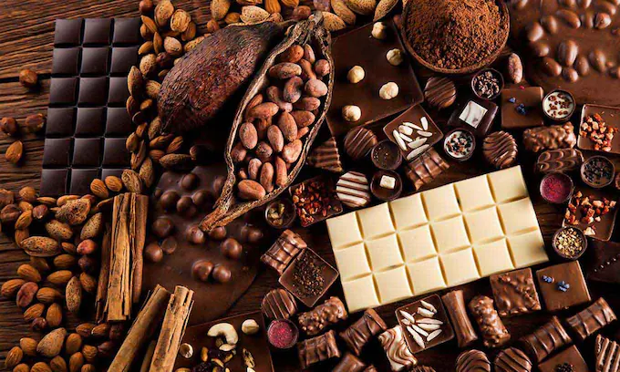

Que es el chocolateEl chocolate es un alimento producido mediante la mezcla de azúcar y el fruto del
cacao (específicamente,
la masa y la manteca del cacao), así como de otros ingredientes como |
 |
Existen diferentes tipos de chocolate, atendiendo a varios factores. Existen, por ejemplo, dos vertientes de granos de cacao (fuertes y suaves, dependiendo de la amargura del grano), que producen chocolates de sabor más intenso o más leve. Sin embargo, la clasificación usual del chocolate depende del porcentaje de cacao que contenga cada preparación, así como de los demás ingredientes con los que se lo combine. Así, los principales tipos de chocolate son:
Existe mucho debate en torno a los beneficios y los riesgos de consumir chocolate. Esto se debe a
que, por un lado, se conocen los efectos de los compuestos energéticos y antioxidantes del cacao,
pero al mismo tiempo el porcentaje de cacao presente (y su pureza) en la mayoría de los
chocolates comercializados es bajo, por lo que acaba siendo un producto compuesto mayormente por
azúcares y grasas.
Esto significa que el consumo de chocolate (especialmente el chocolate blanco) contribuye con la
aparición de enfermedades metabólicas y con el aumento de peso, lo cual conlleva a su vez riesgos
cardíacos y vasculares. Asimismo, se trata de un alimento con un porcentaje no desdeñable de plomo,
por lo que su ingesta debe ser moderada. El consumo de chocolate por animales es poco recomendable,
ya que su contenido de teobromina lo convierte en un alimento altamente tóxico para la mayoría de
las mascotas.
En cambio, la ingesta frecuente pero moderada (pues se trata de un alimento hipercalórico) de las
variantes más puras del chocolate negro han demostrado beneficios en el cuerpo humano, tales
como:
Desventajas de consumir chocolate
|